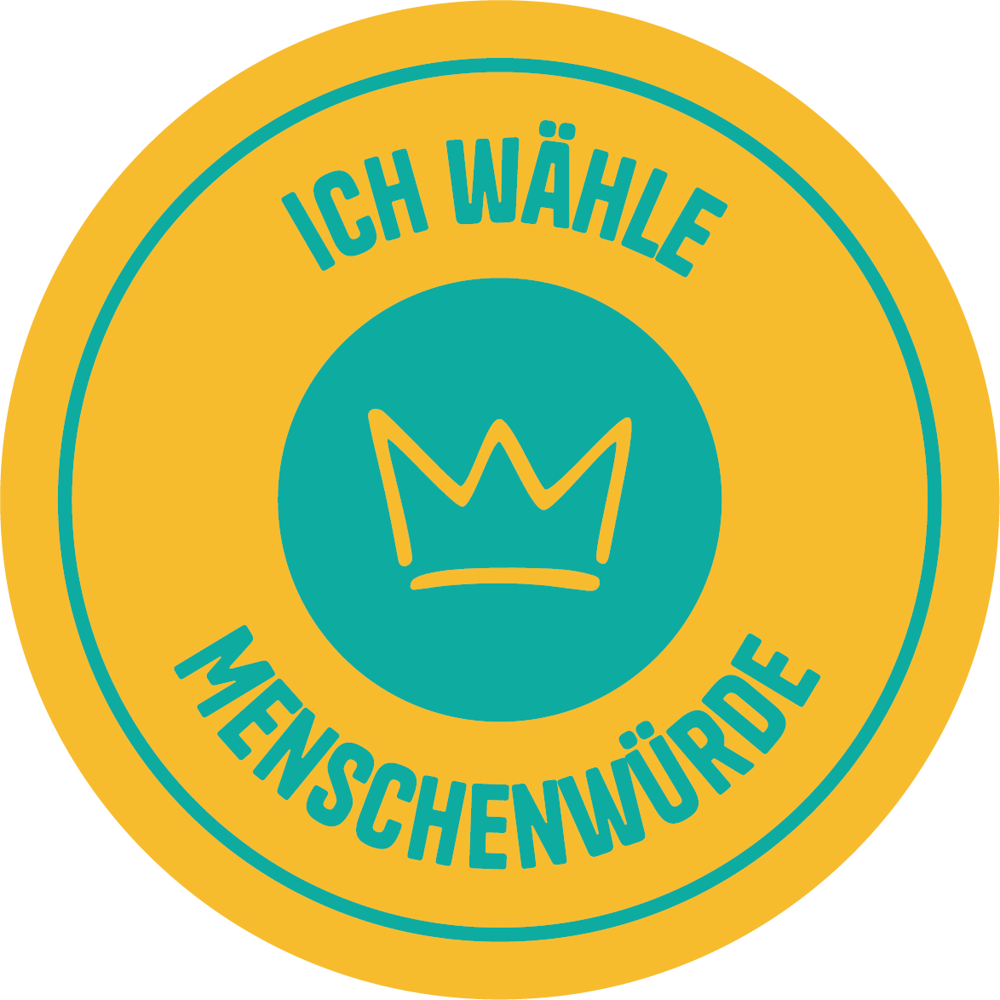

Gemeinsam mit euch
Seit Anfang 2024 engagiert sich unser „Verein für Menschenwürde und Demokratie“ dafür, dass die Würde eines jeden Menschen unantastbar ist und nicht zur Diskussion stehen darf. Viele wirken inzwischen deutschlandweit daran mit. Mehr als 50 000 Würdetafeln sind bereits gebrannt und in Politik, Bildung, Kultur und Gesellschaft sichtbar. Unzählige Aktionen haben schon dazu stattgefunden.
Hier geht es zu unserer Grundidee →
Unsere Aktionen sind alle überparteilich und entsprechen dem Unparteilichkeitsgrundsatz.
Die Würde aller Menschen ist in Artikel 1 unseres Grundgesetzes fest verankert und somit zentraler Bestandteil unserer Demokratie. Leider wird die Menschenwürde immer noch angetastet, sei es durch soziale Ungerechtigkeit, Diskriminierung oder politische Entwicklungen.
Wir danken allen, die sich durch die vielen verschiedenen Aktionen für die Menschenwürde einsetzen. Sei es durch das Brennen und Verteilen von Würdetafeln, das Aufhängen von Plakaten, die Organisation von Veranstaltungen und vieles mehr.
Wir machen weiter und hoffen, ihr auch.
Mach mit: Teile deine Idee für mehr Würde.